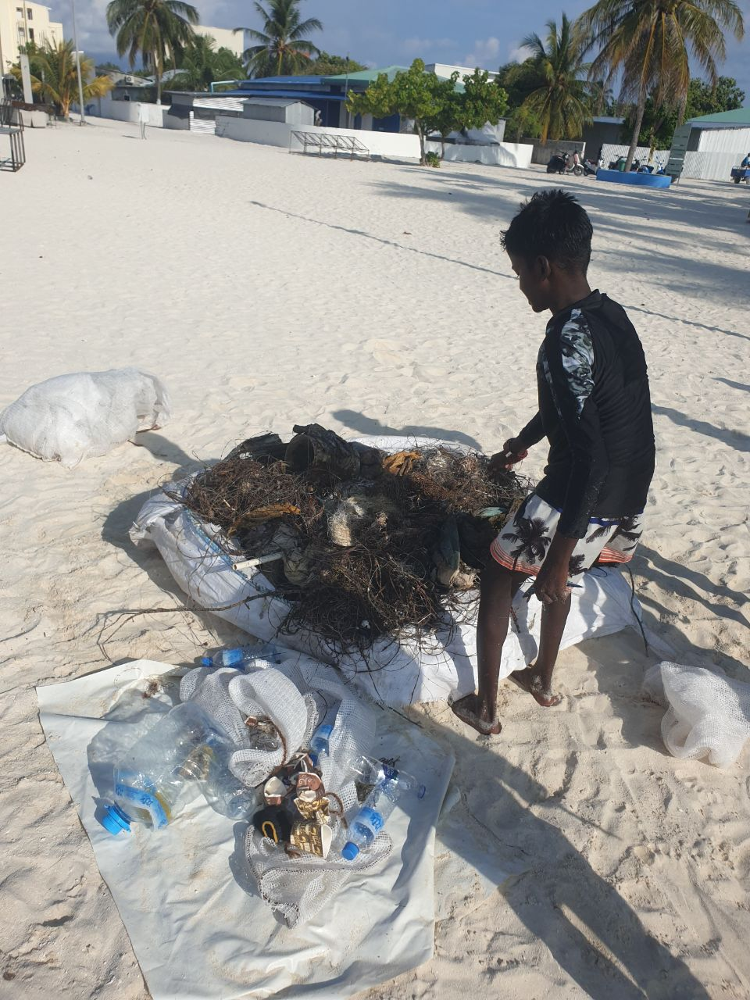
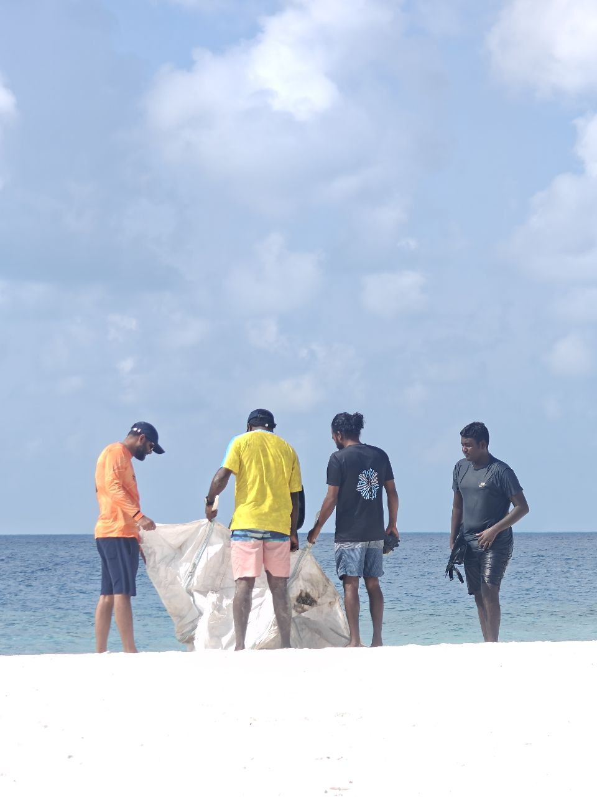
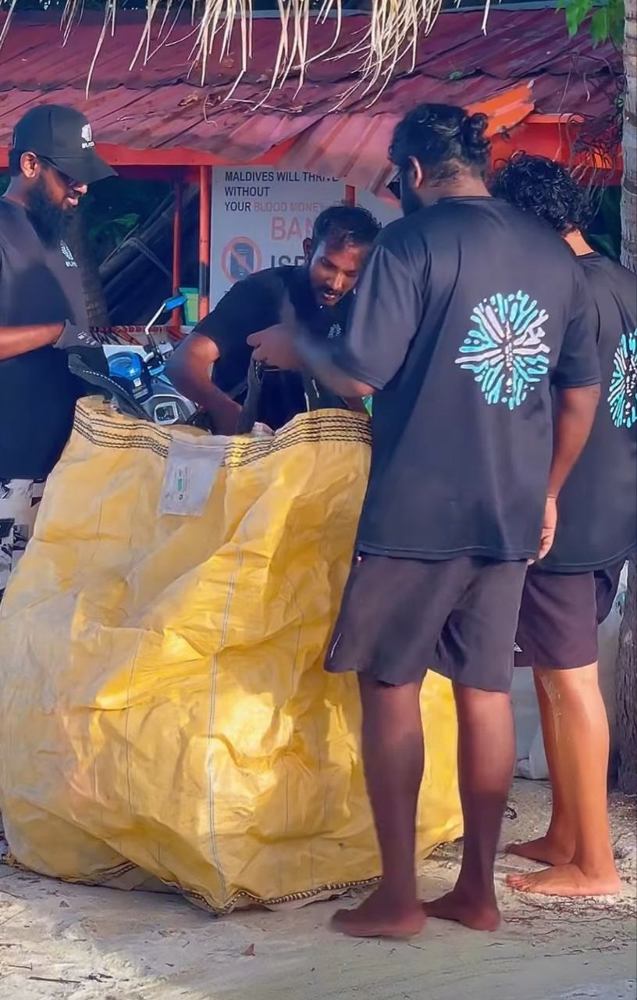
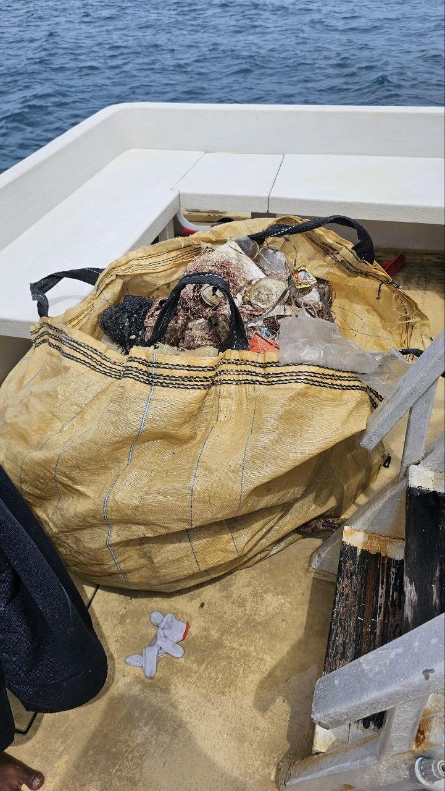
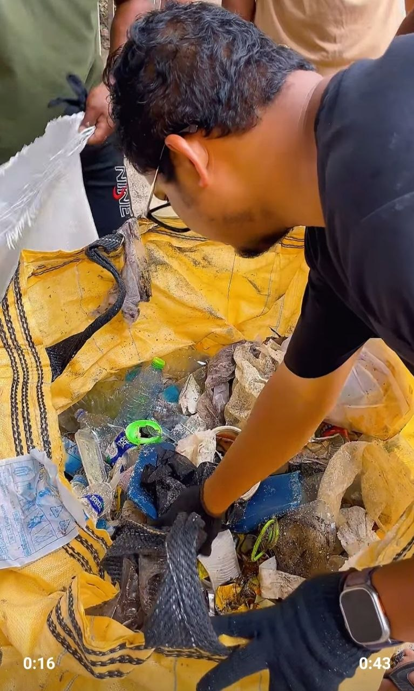
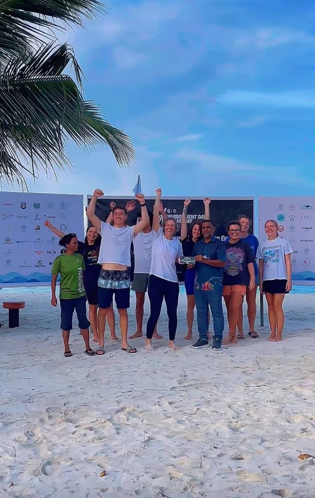

Dharavandhoo Beach Cleaning with Baa Atoll School Scouts
A youth-led shoreline clean-up bringing Baa Atoll School Scouts into practical environmental action while encouraging responsibility for the island's beaches and surrounding ocean.
Community clean-ups bring students, local organisations, businesses and island stakeholders together to care for Dharavandhoo's beaches and marine environment.
These activities connect practical environmental work with community participation and long-term island stewardship.
A youth-led shoreline clean-up bringing Baa Atoll School Scouts into practical environmental action while encouraging responsibility for the island's beaches and surrounding ocean.
A collaborative effort involving community NGOs and local stakeholders to remove waste from the house reef and support a healthier marine environment close to the island.


.jpg)




A coordinated beach clean-up bringing state-owned enterprises and island stakeholders together to collect shoreline waste and reinforce shared care for Dharavandhoo's public spaces.